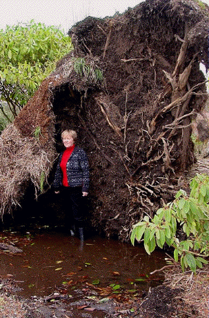

Introduction History Spring Tour Other Seasons Companion Plants Fruit/Veg/Herbs Work Family Links ARS DESIGN ELEMENTS SPECIMENS TIPS VISITING THE GARDEN GARDEN FURNITURE
Windstorm--December 4, 2003 More Windstorm Pictures: Shore Pine Red Oak, Japanese Red Pine, and Honey Locust Snowstorm--January 3, 2004 Ice Storm--January 7, 2004 STORM-DOWNED TREE FURNITURE
|
On December 4, 2003, the notorious Enumclaw east wind blew down through Cayuse Pass with sustained speeds of 60 miles per hour and gusts to 80. We lost eleven large trees in the garden. Pine trunks were snapped, cedars were uprooted, and a honey locust was broken off at the base. One 60 foot oak fell into a larger Ponderosa pine, even though it had already dropped all its leaves. Several large rhododendrons were also uprooted, from 45 to 90 degrees. Most of them can be saved. |
 |
Doreen stands in front of a Port Orford Cedar, planted in 1964, the year we were married. A small Mary Fleming, already tagged for moving, is growing horizontally (parallel to the cedar trunk) above Doreen's head. The ripped-out roots and accompanying soil created a two-foot-deep pond. We also lost a sixty foot Alaska Yellow Cedar. Click here to see the Port Orford and Alaska Cedar before the storm. |
Introduction History Spring Tour Other Seasons Companion Plants Fruit/Veg/Herbs Work Family Links ARS DESIGN ELEMENTS SPECIMENS TIPS VISITING THE GARDEN GARDEN FURNITURE
© 2001-2003 by John and Doreen Anderson